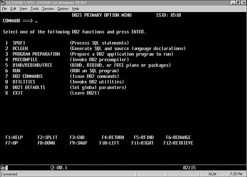
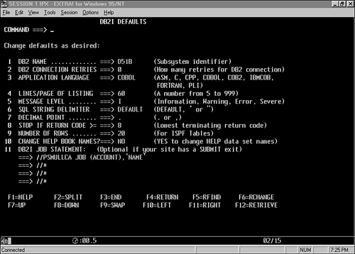
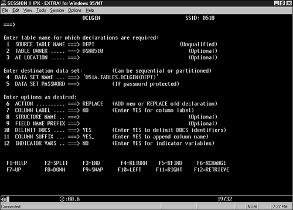
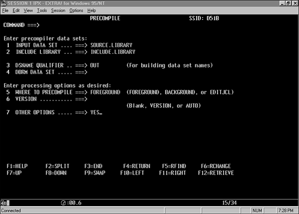
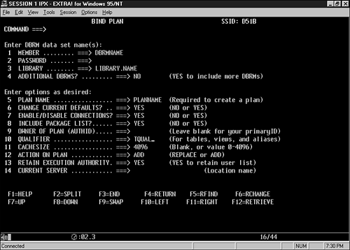
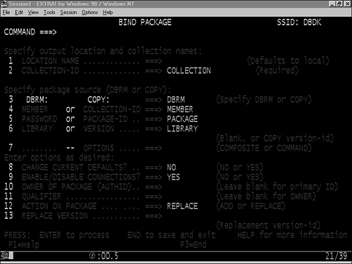
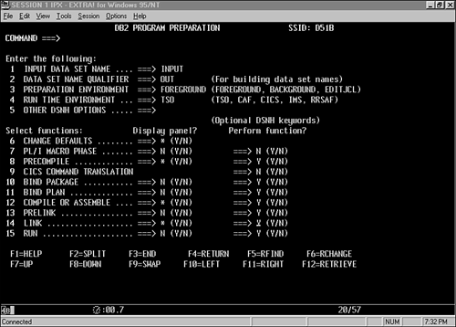
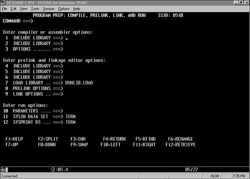
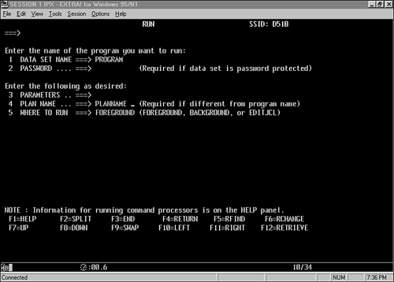

|
|
< Day Day Up > |
|
Preparing a DB2 ProgramYou can prepare a DB2 program in many ways. Following are the most common methods:
Each shop has its own standards. Consult your shop standards for the supported method or methods of DB2 program preparation. This section discusses each of the preceding methods. Program Preparation Using DB2IDB2I, or DB2 Interactive, is an online, TSO/ISPF based interface to DB2 commands, DB2 administrative functions, and CLISTs provided with DB2. It is a panel-driven application that enables a user to prepare a DB2 program, among other things. You can use eight DB2I panels to assist with DB2 program preparation. The DB2I main menu, shown in Figure 13.2, appears when you select the DB2I option from the main menu. Figure 13.2. The DB2I main menu.NOTE Some installations require the user to execute a preallocation CLIST before invoking DB2I. Consult your shop standards. Before proceeding to the main task of program preparation using DB2I, you first must ensure that the DB2I defaults have been properly set. Option D from the main menu displays the DB2I Defaults panel, which is shown in Figure 13.3. The default values usually are adequate. When you first enter DB2I, however, ensure that the correct DB2 subsystem name, application language, and delimiters are set. Figure 13.3. The DB2I Defaults panel.After checking the DB2I Defaults panel, you need to create DCLGEN members for all tables that will be accessed in application programs. You should do this before writing any application code. Choosing option 2 from the DB2I main menu displays the DCLGEN panel (see Figure 13.4). Specify the name of the table in option 1 and the name of the data set in which the DBRM will be placed in option 2. DB2 automatically creates the DCLGEN member, including WORKING-STORAGE fields and the DECLARE TABLE statement. DCLGEN will not allocate a new data set, so you must preallocate the data set specified in option 2 as a sequential data set with an LRECL of 80. Refer to the DCLGEN member (presented earlier in this chapter) for the DSN8810.DEPT table. Figure 13.4. The DB2I DCLGEN panel.You use option 3 of DB2I to precompile DB2 application programs. Figure 13.5 shows the Precompile panel. To precompile a program, provide the following information in the specified locations on the Precompile panel:
Figure 13.5. The DB2I Precompile panel.NOTE You can run the precompiler in the foreground or the background. You can bind, rebind, and free DB2 plans and packages using DB2I option 5. In this section, I discuss the BIND option because it is the only one needed for program preparation. Two bind panels are available: one for binding plans, as shown in Figure 13.6, and one for binding packages, as shown in Figure 13.7. The BIND process creates plans or packages or both from one or more DBRMs. You should not attempt binding until the precompile is completed successfully. Figure 13.6. The DB2I Bind Plan panel.Figure 13.7. The DB2I Bind Package panel.You may have noticed that the compile and link edit steps are missing from the previous discussions of program preparation. DB2I option 3 takes you step-by-step through the entire DB2 program preparation procedure, displaying the previous panels (and an additional one). By entering the appropriate selections in the Program Preparation panel, shown in Figure 13.8, you can completely prepare and then run a source program. Figure 13.8. The DB2I Program Preparation panel.After you enter the necessary information in the Program Preparation panel, you are navigated through the Precompile panel (refer to Figure 13.5); a new panel for the specification of compilation, link edit, and run parameters (see Figure 13.9), and the Bind panels (refer to Figures 13.6 and 13.7). Figure 13.9. The DB2I Compile, Prelink, Link, and Run panels.The panels are prefilled with the information provided in the Program Preparation panel. This probably is the easiest method of preparing a DB2 program. Following is a sample of the output generated by DB2I program preparation:
%DSNH parameters
SOURCE STATISTICS
SOURCE LINES READ: 459
NUMBER OF SYMBOLS: 77
SYMBOL TABLE BYTES EXCLUDING ATTRIBUTES: 4928
THERE WERE 0 MESSAGES FOR THIS PROGRAM.
THERE WERE 0 MESSAGES SUPPRESSED BY THE FLAG OPTION.
101944 BYTES OF STORAGE WERE USED BY THE PRECOMPILER.
RETURN CODE IS 0
DSNH740I ======= PRECOMPILER FINISHED, RC = 0 ======
LISTING IN TEMP.PCLIST ====================
DSNT252I - BIND OPTIONS FOR PLAN planname
ACTION ADD
OWNER authid
VALIDATE BIND
ISOLATION CS
ACQUIRE USE
RELEASE COMMIT
EXPLAIN YES
DSNT253I - BIND OPTIONS FOR PLAN planname
NODEFER PREPARE
DSNH740I ======= BIND FINISHED, RC = 0 =============
DSNH740I ======= COB2 FINISHED, RC = 0 ======
LISTING IN TEMP.LIST ====================
DSNH740I ======= LINK FINISHED, RC = 0 ======
LISTING IN TEMP.LINKLIST ====================
***
When you're using the DB2I Program Preparation option, the status of the program preparation appears onscreen. The italicized sections in the listing are replaced by the options you select when preparing your programs. Additionally, if you set any return codes to a non-zero number, you will encounter program preparation warnings or errors. You can run DB2 programs using DB2I only if they are TSO programs. You also can simply run a DB2 program from DB2I option 6 (see Figure 13.10). Before you can run the program, however, you must first prepare it. Figure 13.10. The DB2I Run panel.Program Preparation Using Batch ProceduresSome shops prefer to handle all DB2 program preparation with a batch job. The batch procedure handles all the steps required for DB2 program preparation, which results in an executable load module and plan. Programmers often choose batch procedures to automate and standardize the specification of work data set names; compile, link, and bind parameters; and source, DBRM, and DCLGEN library names. A batch procedure invoked by common JCL with an override for the program name limits an application programmer's exposure to these miscellaneous program preparation factors. Listing 13.2 shows a common batch procedure. Note that the data set names and libraries for your shop may be different, as may the COBOL compile step. Listing 13.2. Sample Program Preparation Procedure
//COMPBAT PROC MBR='XXXXXXXX', ** MEMBER NAME **
// FLEVEL='APPL.ID' ** LIBRARY PREFIX **
// DB2='SYS1.DB2V810', ** DB2 SYSTEM PREFIX **
// WORK='SYSDA', ** WORK FILES UNIT **
// SOURCE='APPL.ID.SOURCE', ** SOURCE DATASET **
// SYSOUT='*'
//************************************************************
//* DB2 PRECOMPILE STEP FOR COBOL—BATCH
//************************************************************
//DB2PC EXEC PGM=DSNHPC,
// PARM='DATE(ISO),TIME(ISO),HOST(IBMCOB),APOST'
//STEPLIB DD DSN=&DB2..DSNEXIT,DISP=SHR
// DD DSN=&DB2..DSNLOAD,DISP=SHR
//SYSLIB DD DSN=&FLEVEL..INCLUDE,DISP=SHR
// DD DSN=&FLEVEL..DCLGENLB,DISP=SHR
//SYSCIN DD DSN=&&SRCOUT,DISP=(NEW,PASS,DELETE),
// UNIT=&WORK,
// DCB=BLKSIZE=800,SPACE=(800,(800,500))
//SYSIN DD DSN=&SOURCE(&MBR),DISP=SHR
//DBRMLIB DD DSN=&FLEVEL..DBRMLIB(&MBR),DISP=SHR
//SYSPRINT DD SYSOUT=&SYSOUT
//SYSTERM DD SYSOUT=&SYSOUT
//SYSUT1 DD SPACE=(800,(500,500)),UNIT=&WORK
//SYSUT2 DD SPACE=(800,(500,500)),UNIT=&WORK
//************************************************************
//* COBOL COMPILE
//************************************************************
//COB EXEC PGM=IGYCRCTL,
// COND=(5,LT,DB2PC),
// PARM=('NODYNAM,LIB,OBJECT,RENT,RES,APOST',
// 'DATA(24),XREF')
//STEPLIB DD DSN=SYS1.COBLIB,DISP=SHR
//SYSPRINT DD DSN=&&SPRNT,DISP=(MOD,PASS),UNIT=SYSDA,
// SPACE=(TRK,(175,20)),DCB=BLKSIZE=16093
//SYSTERM DD SYSOUT=&SYSOUT
//SYSUT1 DD UNIT=&WORK,SPACE=(CYL,(5,1))
//SYSUT2 DD UNIT=&WORK,SPACE=(CYL,(5,1))
//SYSUT3 DD UNIT=&WORK,SPACE=(CYL,(5,1))
//SYSUT4 DD UNIT=&WORK,SPACE=(CYL,(5,1))
//SYSUT5 DD UNIT=&WORK,SPACE=(CYL,(5,1))
//SYSUT6 DD UNIT=&WORK,SPACE=(CYL,(5,1))
//SYSUT7 DD UNIT=&WORK,SPACE=(CYL,(5,1))
//SYSLIN DD DSN=&&OBJECT,DISP=(NEW,PASS,DELETE),
// UNIT=&WORK,SPACE=(TRK,(25,10),RLSE),
// DCB=(RECFM=FB,LRECL=80,BLKSIZE=2960)
//SYSLIB DD DSN=&FLEVEL..COPYLIB,DISP=SHR
//SYSIN DD DSN=&&SRCOUT,DISP=(OLD,DELETE,DELETE)
//************************************************************
//* PRINT THE SYSPRINT DATA SET IF THE RETURN CODE IS > 4
//************************************************************
//GEN1 EXEC PGM=IEBGENER,COND=(5,GT,COB)
//SYSPRINT DD SYSOUT=*
//SYSUT3 DD UNIT=SYSDA,SPACE=(TRK,(10)),DISP=NEW
//SYSUT4 DD UNIT=SYSDA,SPACE=(TRK,(10)),DISP=NEW
//SYSIN DD DUMMY
//SYSUT1 DD DSN=&&SPRNT,DISP=(OLD,PASS)
//SYSUT2 DD SYSOUT=*
//************************************************************
//* LINK EDIT THE BATCH PROGRAM FOR DB2
//************************************************************
//LINKIT EXEC PGM=HEWL,
// COND=((5,LT,DB2PC),(5,LT,COB)),
// PARM='LIST,XREF'
//SYSLIB DD DSN=SYS1.COBLIB,DISP=SHR
// DD DSN=SYS1.COBCOMP,DISP=SHR
// DD DSN=&DB2..DSNEXIT,DISP=SHR
// DD DSN=&DB2..DSNLOAD,DISP=SHR
// DD DSN=&FLEVEL..BATCH.LOADLIB,DISP=SHR
//DB2LOAD DD DSN=&DB2..DSNLOAD,DISP=SHR
//SYSLIN DD DSN=&&OBJECT,DISP=(OLD,PASS)
// DD DSN=&FLEVEL..LINKLIB(&MBR),DISP=SHR
//SYSLMOD DD DSN=&FLEVEL..BATCH.LOADLIB(&MBR),DISP=SHR
//SYSPRINT DD SYSOUT=&SYSOUT
//SYSUT1 DD UNIT=&WORK,SPACE=(CYL,(1,2))
//************************************************************
//* BIND PLAN FOR THE MODULE
//************************************************************
//BIND1 EXEC PGM=IKJEFT1B,DYNAMNBR=20,
// COND=((5,LT,DB2PC),(5,LT,COB),(5,LT,LINKIT))
//STEPLIB DD DSN=&DB2..DSNEXIT,DISP=SHR
// DD DSN=&DB2..DSNLOAD,DISP=SHR
//SYSTSPRT DD SYSOUT=*
//SYSPRINT DD SYSOUT=*
//SYSUDUMP DD SYSOUT=*
//DBRMLIB DD DSN=&FLEVEL..DBRMLIB,DISP=SHR
//SYSTSIN DD *
DSN SYSTEM(DSN)
BIND PLAN(&MEMBER.) MEMBER(&MEMBER.) -
ACTION(REPLACE) RETAIN -
VALIDATE(BIND) ACQUIRE(USE) -
RELEASE(COMMIT) ISOLATION(CS) -
DEGREE(1) EXPLAIN(YES)
END
//
Program Preparation Using CLIST or REXX EXECAnother common practice for some shops is to create a CLIST or REXX EXEC that can be invoked to prompt the user to enter program preparation options. The CLIST or EXEC reads the options as specified by the programmer and builds JCL to invoke program preparation using those parameters. This method enables programmers to make quick changes to precompile, compile, and link edit parameters without requiring them to explicitly change parameters in JCL that they do not always fully understand. This method also can force specific options to be used, such as all binds must use ISOLATION(CS) or all links must use RMODE=31, by not allowing users to change them. CAUTION Be aware that "forcing" the use of specific BIND parameters can result in subpar performance. The best approach for specifying BIND parameters is to determine the type of program including the work to be done, its environment, the number of times it will be executed, and the performance required. Only after obtaining and analyzing all of these issues can you appropriately determine the best parameters to use. The CLIST or EXEC can use a standard procedure, as discussed in the preceding section, and automatically submit the job. Program Preparation Using Multiple MethodsWhen you develop program preparation standards, the following goals should be paramount:
To accomplish the preceding goals, using a combination of the techniques described in this chapter is probably best. The only DB2 program preparation steps that require DB2 to be operational, for example, are DCLGEN and BIND. DCLGEN is not a factor because it normally is invoked outside the program preparation loop. The BIND command, however, usually is embedded in the procedure, CLIST, or REXX EXEC. If this is true, as shown in Listing 13.2, you could be inhibiting your program preparation process. If DB2 is not operational, all program preparation jobs will fail in the bind step. Additionally, if your shop is configured with multiple CPUs, a job with a bind step must be run on the CPU containing the DB2 subsystem that will perform the bind. Without the bind step, the job is free to execute in any available machine because DB2 resources are not required. I recommend the establishment of a common procedure to run all program preparation, except the bind step. You then should code CLIST or REXX EXEC to prompt only for the parameters your shop allows to be changed. It then will build JCL using the common procedure (without the bind step). CLIST or EXEC can ask whether a bind step should be added. This way, application programmers can precompile, compile, and link edit programs when DB2 is not operational, but they have the option of binding when DB2 is operational. This can reduce the amount of downtime because a single machine running a test DB2 subsystem will not become a bottleneck due to a vast number of compiles being submitted to a single machine. You can code a separate CLIST that enables programmers to bind after a successful execution of the precompile, compile, and link—or whenever a bind is required. It should accept only certain bind parameters as input, thereby enforcing your shop's bind standards. Ideally, the CLIST should be able to bind the program in the foreground or the background using batch JCL. Listings 13.3 and 13.4 are sample CLISTs to accomplish DB2 program preparation. You can use these samples as templates for creating your own program preparation CLISTs that follow your organization's standards and procedures. Listing 13.3. Precompile, Compile, and Link CLIST
PROC 1 PLANNAME JOB(BB)
/* THIS CLIST ACCEPTS A PROGRAM NAME AS INPUT, PROMPTS
/* FOR THE REQUIRED PROGRAM PREPARATION PARAMETERS,
/* AND SUBMITS A BATCH JOB TO PREPARE THE PROGRAM
/* FOR EXECUTION.
CONTROL PROMPT NOFLUSH END(DONE)
K
WRITE
ASKMSG:-
WRITE
WRITE ENTER OUTPUT MESSAGE CLASS:
WRITENR =====>
READ &MSG
IF &MSG NE X AND &MSG NE A THEN DO-
WRITE
WRITE INVALID MESSAGE CLASS ENTERED
GOTO ASKMSG
DONE
ASKSORC:-
WRITE
WRITE ENTER NAME OF PROGRAM SOURCE LIBRARY TO USE:
WRITE (PRESS ENTER TO ACCEPT DEFAULT SOURCE LIBRARY)
WRITENR =====>
READ &SORC
IF &SORC = THEN SET &SORCLB=&STR(DEFAULT.SORCLIB)
ELSE SET &SORCLB=&SORC
ASKPREFX:-
WRITE
WRITE ENTER THE PREFIX FOR YOUR APPLICATION LINK
WRITE AND DBRM LIBRARIES:
WRITE (PRESS ENTER TO ACCEPT DEFAULT PREFIX)
WRITENR =====>
READ &PREF
IF &PREF = THEN SET &PREFX=&STR(DEFAULT.PREFIX)
ELSE SET &PREFX=&PREF
BUILDJCL:-
K
WRITE BUILDING PROGRAM PREPARATION JCL, PLEASE WAIT...
EDIT COMPLINK.CNTL NEW EMODE
10 //&SYSUID.&JOB JOB(job information),'PROG PREP &PROGNAME',
11 // MSGLEVEL=(1,1),NOTIFY=&SYSUID.,MSGCLASS=&MSG,CLASS=X
15 //JOBLIB DD DSN=SYS1.DB2V2R3.LINKLIB,DISP=SHR
20 //PROGPREP EXEC COMPBAT,MBR=&PROGNAME.,FLEVEL=&PREFIX.,
22 // SOURCE=&SORCLB.
24 /*
26 //
SUBM:-
WRITE PROGRAM, &PROGNAME WILL BE
WRITE PRECOMPILED, COMPILED, AND LINKED
WRITE FROM &SORCLB
SUBMIT
END NO
EXIT
Listing 13.4. Bind CLIST
PROC 1 PLANNAME JOB(BB)
/* THIS CLIST ACCEPTS A PLANNAME AS INPUT, PROMPTS FOR */
/* THE REQUIRED BIND PARAMETERS, AND SUBMITS A BATCH */
/* JOB TO BIND THE PLAN */
CONTROL PROMPT NOFLUSH END(DONE)
K
WRITE
ASKMSG:-
WRITE
WRITE ENTER OUTPUT MESSAGE CLASS:
WRITENR =====>
READ &MSG
IF &MSG NE X AND &MSG NE A THEN DO-
WRITE
WRITE INVALID MESSAGE CLASS ENTERED
GOTO ASKMSG
DONE
ASKLIB:-
WRITE
WRITE ENTER NAME OF DBRM LIBRARY TO USE:
WRITE (PRESS ENTER TO ACCEPT DEFAULT DBRMLIB)
WRITENR =====>
READ &LIB
IF &LIB = THEN SET &DLIB=&STR(DEFAULT.DBRMLIB)
ELSE SET &DLIB=&LIB
ASKEXPL:-
WRITE
WRITE DO YOU WANT TO DO AN EXPLAIN OF THIS PLAN (Y/N) ?
WRITENR =====>
READ &EXP
IF &EXP NE Y AND &EXP NE N THEN DO-
WRITE
WRITE INVALID RESPONSE PLEASE ENTER ONLY Y OR N
GOTO ASKEXPL
DONE
IF &EXP = N THEN SET &EXPL=&STR(NO)
ELSE SET &EXPL=&STR(YES)
ASKDBRM:-
K
WRITE
WRITE ENTER THE NAME OF ALL DBRMS TO BE BOUND INTO THIS
WRITE PLAN. BE SURE TO PLACE A COMMA BETWEEN EACH DBRM &
WRITE INCLUDE QUOTATION MARKS IF THERE IS MORE THAN ONE
WRITE DBRM. ( FOR EXAMPLE:: &STR(')DBRM1,DBRM2&STR(') )
WRITE OR PRESS ENTER TO DEFAULT DBRM TO &PLANNAME
WRITENR =====>
READ &DLIST
IF &DLIST = THEN SET &DBRM=&PLANNAME
ELSE SET &DBRM=&LIST
BUILDJCL:-
K
WRITE BUILDING BIND JCL, PLEASE WAIT...
EDIT BIND.CNTL NEW EMODE
10 //&SYSUID.&JOB JOB(job information),'BIND &PLANNAME',
11 // MSGLEVEL=(1,1),NOTIFY=&SYSUID.,MSGCLASS=&MSG,CLASS=X
15 //JOBLIB DD DSN=SYS1.DB2V5R1.LINKLIB,DISP=SHR
20 //BIND EXEC PGM=IKJEFT1B,DYNAMBR=20
22 //SYSTSPRT DD SYSOUT=*
24 //SYSPRINT DD SYSOUT=*
26 //SYSABOUT DD SYSOUT=*
28 //SYSTSIN DD *
30 DSN SYSTEM(DSN)
32 BIND PLAN (&PLANNAME) &STR(-)
34 MEMBER (&DBRM) &STR(-)
36 LIBRARY (&DLIB) &STR(-)
38 ACTION (REPLACE) &STR(-)
40 VALIDATE (BIND) &STR(-)
42 ISOLATION (CS) &STR(-)
44 FLAG (I) &STR(-)
46 ACQUIRE (USE) &STR(-)
48 RELEASE (COMMIT) &STR(-)
50 DEGREE (1) &STR(-)
52 EXPLAIN (&EXPL)
54 END
56 /*
58 //
SUBM:-
WRITE &PLANNAME WILL BE BOUND
WRITE USING &DBRM
WRITE FROM &DLIB
SUBMIT
END NO
EXIT
|
|
|
< Day Day Up > |
|